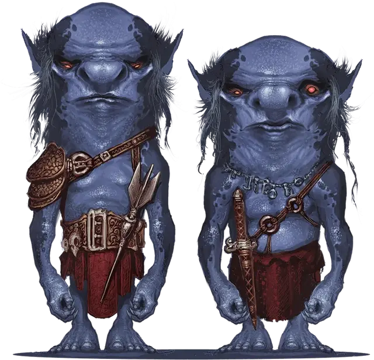

Ксварт
Xvart
Маленький Монстр, обычно хаотично-злой

Класс Доспеха 13 (кожаный доспех)
Хиты 7 (2к6)
Скорость 30 футов
| мод | спас | ||
|---|---|---|---|
| СИЛ | 8 | −1 | −1 |
| ЛОВ | 14 | +2 | +2 |
| ТЕЛ | 10 | +0 | +0 |
| мод | спас | ||
|---|---|---|---|
| ИНТ | 8 | −1 | −1 |
| МДР | 7 | −2 | −2 |
| ХАР | 7 | −2 | −2 |
Навыки Скрытность +4
Чувства тёмное зрение 30 футов, пассивное Восприятие 8
Языки Бездны
Опасность 1/8 (25 опыта)
Бонус мастерства +2
Среда обитания Холмы, Подземье
Особенности
Язык Раксиворта. . Ксварт может общаться с обычными летучими мышами и крысами, а также с гигантскими летучими мышами и гигантскими крысами.
Действия
Короткий меч. . Рукопашная атака оружием: +4 к попаданию, досягаемость 5 футов, одна цель. Попадание: 5 (1к6 + 2) колющего урона. Если хотя бы один из союзников ксварта находится в пределах 5 футов от цели, ксварт может оттолкнуть цель на 5 футов, если целью является существо Среднего размера или меньше.
Праща. . Дальнобойная атака оружием: +4 к попаданию, дистанция 30/120 футов, одна цель. Попадание: 4 (1к4 + 2) дробящего урона.
Бонусные действия
Низкое коварство. Ксварт может совершать действие Отход.
Описание
Спасаясь от преследователей, Раксиворт бродил по мультивселенной и породил ксвартов, которые не только похожи на него, но и заставляют любую магию, которая могла бы раскрыть его местоположение, указывать на ближайшего ксварта.
Ксварты
Ксварты -трусливые гуманоиды, порожденные трусливым полубогом–ренегатом Раксивортом. У них синяя кожа, яркие оранжевые глаза, реденькие волосы, всё это подражает внешности их создателя. Их рост примерно 3 фута.
Раксиворт провел многие столетия, наблюдая за сокровищами, и спустя года начал жаждать богатств своего хозяина. Однажды он осмелился ограбить хранилище сокровищ и сбежал на Материальный План. Одним из сокровищ, что он украл, было Веретено Бесконечности, кристаллический осколок, который мог превратить даже такое незначительное существо как Раксиворт в полубога.
После становления божеством Раксиворт создал мир под названием Чёрные Стоки, внутри Пандасмоса, самого верхнего слоя Пандемониума, которое он наполнил своими любимыми существами, крысами и летучими мышами, с которыми ксварты дружат по сей день. Однако, он наслаждался своей божественностью довольно недолго, а потом Граз’зт обрушил на него свое возмездие. Принц демонов призывал всех злодеев преследовать Веретено Бесконечности для собственных нужд и уничтожить Раксиворта.
См. дополнительно статью: "Бестиарий: Ксварты"